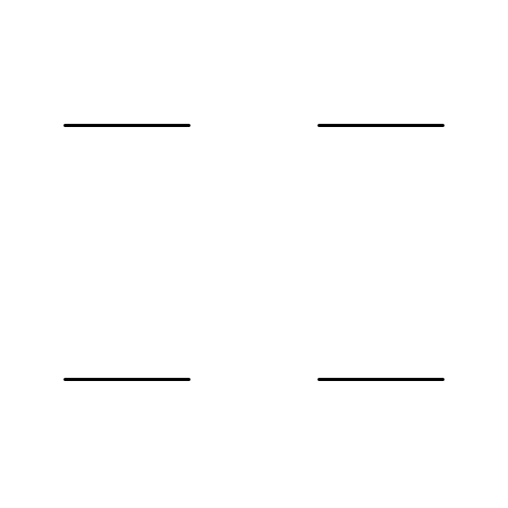

<!doctype html><html lang="zh-CN"><meta charset="utf-8"><meta name="viewport" content="width=device-width,initial-scale=1"><title>同一个起点，四种后来</title><link rel="stylesheet" href="style.css"><script src="app.js" defer></script><main><header><a href="../../">← Sample 备选库</a><span>THE FLIPBOOK EXPERIMENT / 2024</span></header><section class="layout"><aside><p class="eyebrow">逐帧传递 · 四路对照</p><h1>同一个起点，<br>四种后来。</h1><p class="intro">每个人临摹上一人的画。小小的偏差，经过一次次传递，变成完全不同的形状。</p><p>原实验把同一个起始图案交给四组人。一起拖动时间，看看它们从哪一帧开始分道扬镳。</p><label class="select-label" for="shape">从什么开始？</label><select id="shape"><option value="1">一条线 / Line</option><option value="2">三角形 / Triangle</option><option value="3">圆 / Circle</option><option value="4">鱼 / Fish</option><option value="5">螺旋 / Spiral</option><option value="6">得克萨斯州 / Texas</option></select><dl><div><dt>6</dt><dd>起始图案</dd></div><div><dt>4</dt><dd>独立分支</dd></div><div><dt>360</dt><dd>同步帧</dd></div></dl><small>来自 The Pudding 的原始逐帧 PNG。四个画面始终对应同一帧，完整保留每一道手绘线条。</small></aside><div class="player"><div class="caption"><span>FOUR WAYS TO DRIFT</span><output id="count">001 / 360</output></div><figure><div class="cross horizontal"></div><div class="cross vertical"></div></figure><label class="sr" for="scrub">逐帧进度</label><input id="scrub" type="range" min="0" max="359" value="0"><div class="controls"><button id="play">播放</button><button id="prev" aria-label="上一帧">←</button><button id="next" aria-label="下一帧">→</button><button id="reset">回到起点</button><label>速度 <select id="speed"><option value="6">6 fps</option><option value="12" selected>12 fps</option><option value="24">24 fps</option></select></label></div><p id="status" role="status">已暂停 · 拖动滑块或逐帧查看</p></div></section><footer><a href="https://pudding.cool/projects/flipbook/">原作 ↗</a><a href="REVIEW.md">来源与复核记录</a><span>候选样例 · 等待 review</span></footer></main></html>
